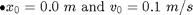
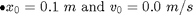
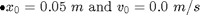
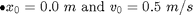
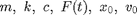
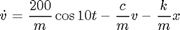
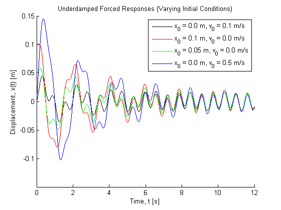

Contents
% Joel Lubinitsky % MAE 321 - HW9.3 % 03/25/15 clear all close all clc
Problem 3:
Numerically integrate and plot the (full, not steady state) response of an underdamped system with m = 150 kg, k = 1500 N/m, and c = 100 kg/s. The system is subject to an applied force F(t) = 200 cos(10t) for the following set of initial conditions:




Known

mass = 150; % kg stiffness = 1500; % N/m coefficientDamping = 100; % kg/s xInitial = [0.0, 0.1, 0.05, 0.0]; % m vInitial = [0.1, 0.0, 0.0, 0.5]; % m/s funForcing = @(t) 200 .* cos(10 .* t);
Calculations
Rewrite as system of first order ODEs:

Apply RK4:
% Initialize System T = 12; dt = 0.001; N = T / dt; times = linspace(0, T, N); vx = zeros(N, 8); vx(1, 2 : 2 : 8) = xInitial; vx(1, 1 : 2 : 7) = vInitial; % Run RK4 Integrator for n = [1 : N - 1] % n step through time time = (n - 1) * dt; for i = [1, 3, 5, 7] % i step through responses vx(n + 1, i : i + 1) = RK4SpringMassDamperForced(vx(n, i), vx(n, i + 1), mass, ... coefficientDamping, stiffness, dt, funForcing, time); end % i end % n
Plots
figure(1) hold on title('Underdamped Forced Responses (Varying Initial Conditions)') xlabel('Time, t [s]') ylabel('Displacement, x(t) [m]') plot(times, vx(:, 2), 'color', [0 0 0]) plot(times, vx(:, 4), 'color', [1 0 0]) plot(times, vx(:, 6), 'color', [0 1 0]) plot(times, vx(:, 8), 'color', [0 0 1]) axis([0 T -0.15 0.15]) legend('x_0 = 0.0 m, v_0 = 0.1 m/s', 'x_0 = 0.1 m, v_0 = 0.0 m/s', 'x_0 = 0.05 m, v_0 = 0.0 m/s', 'x_0 = 0.0 m, v_0 = 0.5 m/s')
Results
Responses with high initial displacements or velocities have transient parts with greater amplitudes. These responses take longer to settle into the steady state than those with smaller initial inputs.